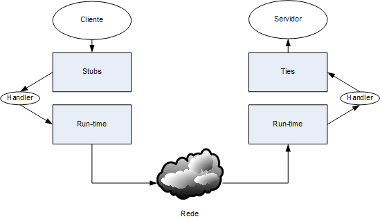

SOAP
O SOAP é o formato de mensagens para Web Services. Os envelopes podem ser transportados pela rede de diversas formas, mas a mais comum é através do protocolo HTTP. O SOAP é independente do protocolo de transporte.
Os documentos seguintes são mensagens SOAP correspondentes a um par pedido-resposta.
<soapenv:Envelope xmlns:soapenv="http://schemas.xmlsoap.org/soap/envelope/"
xmlns:xsd="http://www.w3.org/2001/XMLSchema"
xmlns:ns1="urn:hello">
<soapenv:Body>
<ns1:sayHello>
<ns1:name>friend</ns1:name>
</ns1:sayHello>
</soapenv:Body>
</soapenv:Envelope>
<soapenv:Envelope xmlns:soapenv="http://schemas.xmlsoap.org/soap/envelope/"
xmlns:xsd="http://www.w3.org/2001/XMLSchema"
xmlns:ns1="urn:hello">
<soapenv:Body>
<ns1:sayHelloResponse>
<ns1:return>Hello friend!</ns1:return>
</ns1:sayHelloResponse>
</soapenv:Body>
</soapenv:Envelope>
Uma mensagem SOAP é um documento XML
designado por envelope.
O cabeçalho header permite a composição de protocolos,
pois cada elemento de extensão indica a sua versão e
a opcionalidade da sua interpretação.
O corpo (body) contém os dados de negócio da mensagem ou
então o elemento Fault com informação de erro.
A SAAJ (SOAP with Attachments API for Java) é uma biblioteca que estende o XML DOM, adaptando-o para documentos XML que são mensagens SOAP. Isto significa que existem vários métodos específicos para tratar as mensagens.
Na biblioteca SAAJ, uma mensagem SOAP tem a seguinte estrutura:

A SOAPMessage contém várias partes.
A primeira parte é uma SOAPPart, que contém um SOAPEnvelope.
Um SOAPEnvelope contém um SOAPBody e opcionalmente um SOAPHeader.
Dentro destes, podem ser colocados SOAPElement.
Numa mensagem SOAP, os elementos devem ser sempre especificados
com espaço de nomes,
para evitar conflitos.
Os objectos da biblioteca SAAJ estão no pacote javax.xml.soap.*
O exemplo seguinte mostra como se constrói uma mensagem simples.
...
MessageFactory mf = MessageFactory.newInstance();
SOAPMessage soapMessage = mf.createMessage();
SOAPPart soapPart = soapMessage.getSOAPPart();
SOAPEnvelope soapEnvelope = soapPart.getEnvelope();
SOAPBody soapBody = soapEnvelope.getBody();
Name name = soapEnvelope.createName("HelloWorld", "hw", "urn:helloworld");
SOAPElement element = soapBody.addChildElement(name);
element.addTextNode( "hello text message" );
...
soapMessage.writeTo(System.out);
System.out.println();
...
Exemplos SOAP e XML
Os exemplos seguintes mostram como modificar as mensagens SOAP e
como enviar mensagem SOAP directamente sem stubs.
Para complementar existem também exemplos das tecnologias base de XML:
SAX, DOM, XSD, XPath.
SOAP Handlers
A biblioteca de Web Services para Java, JAX-WS,
tem um mecanismo que permite intercetar e
aceder diretamente às mensagens SOAP.

Um Handler é uma classe Java que implementa a interface javax.xml.ws.handler.soap.SOAPHandler.
O seguinte exemplo é um Handler básico. O principal método é o handleMessage() que é invocado de cada vez que chega ou parte uma mensagem:
package example.ws.handler; import java.util.Set; import javax.xml.namespace.QName; import javax.xml.ws.handler.MessageContext; import javax.xml.ws.handler.soap.SOAPHandler; import javax.xml.ws.handler.soap.SOAPMessageContext; public class EmptyHandler implements SOAPHandler{ /** * Gets the names of the header blocks that can be processed by this Handler instance. * If null, processes all. */ public Set getHeaders() { return null; } /** * The handleMessage method is invoked for normal processing of inbound and * outbound messages. */ public boolean handleMessage(SOAPMessageContext smc) { return true; } /** The handleFault method is invoked for fault message processing. */ public boolean handleFault(SOAPMessageContext smc) { return true; } /** * Called at the conclusion of a message exchange pattern just prior to the * JAX-WS runtime dispatching a message, fault or exception. */ public void close(MessageContext messageContext) { } }
Configuração e parametrização
Os Handlers são classes Java como quaisquer outras. No entanto, como são construídas pelo Web Services Run-time e não pela aplicação, não há forma direta de lhes aceder. Por este motivo, não se consegue "passar" argumentos para os Handlers.
Assim sendo, algumas formas possíveis de configurar um Handler são as seguintes:
-
Receber parâmetros via contexto (SOAPMessageContext)
- esta técnica é ilustrada no exemplo handler_relay - Receber parâmetros via variáveis globais
- Por exemplo, um objeto Singleton e.g. HandlersContext.
- Variáveis static nas próprias classes dos Handlers
- JVM System properties, acessíveis depois por System.getProperty()
As variáveis são globais à instância da Java Virtual Machine (JVM) que corresponde a um processo no sistema operativo; por isso, diferentes programas em execução terão diferentes valores nas variáveis.
As variáveis globais podem ser preenchidas, por exemplo, no método main() do programa que vai usar os Handlers.
Retorno e Exceções
O retorno do método handleMessage() determina de que forma
prossegue o processamento da mensagem.
Se for 'true' o processamento deve prosseguir;
se for 'false' bloqueia o processamento da mensagem,
mudando-lhe o sentido e
fazendo-a voltar para o cliente.
A utilização de exceções permite modificar o normal processamento das mensagens SOAP:
- Se um handler atirar uma exceção java.lang.RuntimeException (ou um sub-tipo desta classe), indica que o processamento normal da mensagem deve parar. O método close() é invocado nos handlers que entretanto já tinham sido chamados, o sentido da mensagem é invertido e a excepção é despachada. Se a mensagem tinha o sentido de saída (outbound), é gerada uma mensagem SOAP automaticamente preenchida com uma SOAP Fault.
- Se um handler atirar uma exceção javax.xml.ws.soap.SOAPFaultException (que é um sub-tipo de javax.xml.ws.ProtocolException), indica que o processamento normal da mensagem deve parar e que se deve iniciar o processamento de mensagem de erro. O sentido da mensagem é invertido, se a mensagem não é ainda uma mensagem de Fault é substituída por uma mensagem de Fault, e o método handleFault() é invocado para o próximo Handler caso exista, para que seja preenchida manualmente a informação da Fault.
Configuração
A configuração dos Handlers é efectuada num ficheiro que define a cadeia de handlers.
<handler-chains xmlns="http://java.sun.com/xml/ns/javaee">
<handler-chain>
<handler>
<handler-class>example.ws.handler.LoggingHandler</handler-class>
</handler>
</handler-chain>
</handler-chains>
A configuração os Handlers é diferente no servidor e no cliente. Em ambos os casos não são necessárias alterações aos pom.xml.
-
No servidor:
- Colocar o ficheiro de configuração handler-chain.xml na pasta src/main/resources
- Acrescentar a seguinte anotação na classe de implementação: @HandlerChain(file="/handler-chain.xml")
-
No cliente:
- Colocar o ficheiro de configuração handler-chain-binding.xml na pasta src/jaxws (definida por convenção)
Biblioteca ws-handlers
Esta biblioteca é um módulo Maven com Handlers que podem ser usados em servidores e clientes.
-
Biblioteca de JAX-WS Handlers

- contém:- LoggingHandler - imprime mensagens SOAP para System.out
- MessageContextHandler - imprime variáveis de contexto para System.out
- HeaderHandler - acrescenta um Header à mensagem SOAP
- HeaderHandlerTest - usa mocks para testar localmente um handler
- fazer mvn install para compilar e instalar o módulo no repositório local do Maven
- acrescentar a dependência para example:ws-handlers:1.0-SNAPSHOT no pom.xml do projeto que vai usar os Handlers
- editar/acrescentar o ficheiro de configuração dos handlers no projeto que os vai usar
Esta biblioteca poderá ser enriquecida com handlers adicionais (por exemplo, no projeto).
Exemplo de Handlers de inspeção de mensagens

Este exemplo demonstra a forma como os SOAP Handlers acedem às mensagens XML dos Web Services.
-
Web Service com JAX-WS Handlers
- os SOAP Handlers permitem intercetar as mensagens SOAP que são enviadas e recebidas.
A configuração é feita através de um ficheiro e de uma anotação. -
Web Service client com JAX-WS Handlers
- a definição de handlers no cliente é feita através de um ficheiro de configuração.
Exemplo de Handlers estafetas de dados

Este exemplo demonstra os mecanismos de passagem de dados entre as diversas camadas de um Web Service:
- do cliente para o handler cliente (via contexto do pedido, que é obtido a partir do stub),
- do handler cliente para o handler servidor (via cabeçalho na mensagem SOAP),
- do handler servidor para o servidor (via contexto das mensagens que é fornecido como argumento),
- do servidor para o handler servidor (novamente via contexto das mensagens que é fornecido pela biblioteca através da anotação @Resource),
- do handler servidor para o handler cliente (via cabeçalho na mensagem SOAP),
- e finalmente, do handler cliente para o servidor (via contexto da resposta).
Consultar os exemplos seguindo os comentários numerados #1, #2, #3, ... que seguem a sequência de uma invocação remota começando no cliente, passando pelo servidor e voltando ao cliente. Pelo caminho o token vai sendo acrescentado com mais dados.